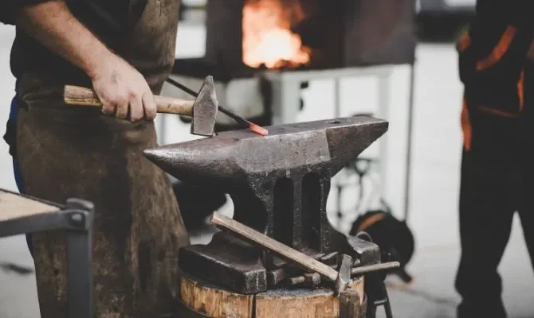
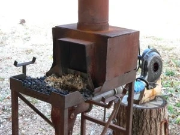
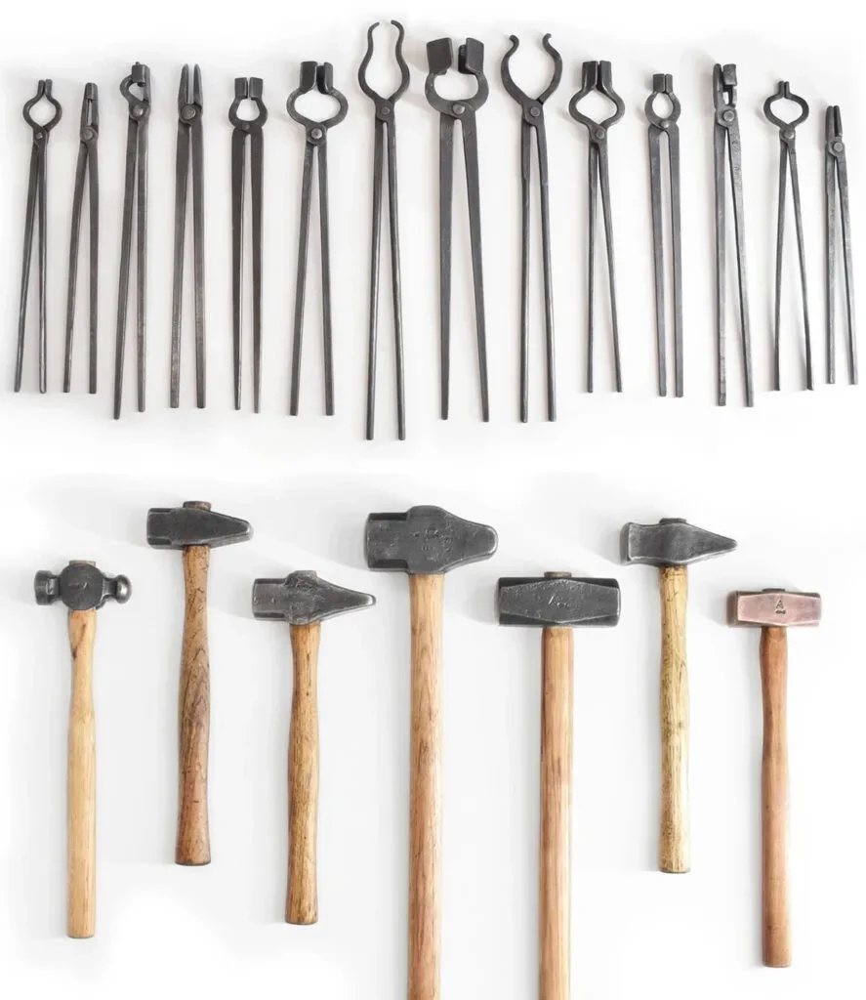

Smithing equipment
Anvil
When selecting an anvil for smithing, consider factors such as weight, material, and features. The ideal weight depends on the type of work you plan to do; a heavier anvil provides stability for larger projects. Traditional anvils are made of cast iron or steel, with steel being preferable for durability. Look for a hardened steel face to withstand repeated hammer blows without denting. Features like a horn and pritchel hole add versatility to your work.
Forge
For traditional blacksmithing, coal forges are popular due to their high heat output and versatility. Gas forges, on the other hand, are cleaner and more controllable, making them suitable for beginners. Propane is commonly used in gas forges due to its availability and efficiency. The size of the forge should match the scale of your projects, ensuring adequate workspace without unnecessary energy consumption.
Hammers & Tongs
Hammers come in various weights and styles, with heavier ones suited for shaping and lighter ones for detailed work. Consider the material of the hammerhead, favoring hardened steel for durability. Tongs, essential for gripping hot metal, vary in design to accommodate different shapes and sizes of workpieces. Ensure a secure grip by choosing tongs that match the project requirements.